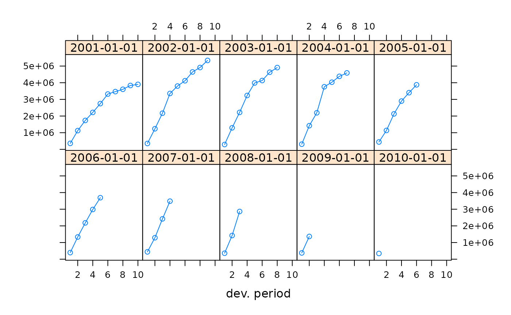
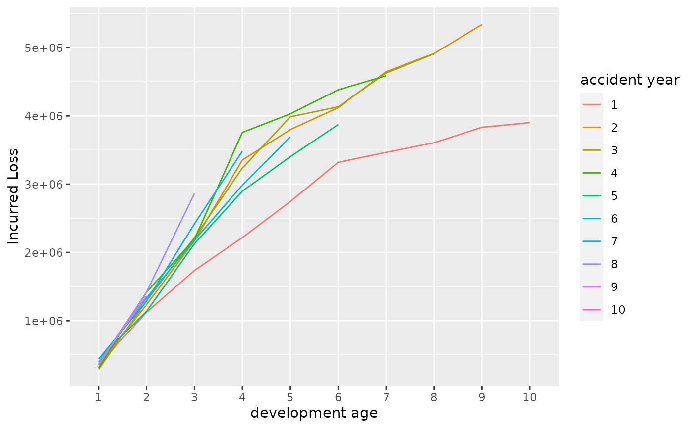

Version 0.2.12 [2021-01-05]
- Moved continuous integration testing from TravisCI to GitHub Actions
- Changed vignette format from Sweave to RMarkdown to facilitate easier testing using GitHub Actions
Version 0.2.11 [2020-02-10]
- Fixed as.triangle for a ‘long’ data set, when input data had missing values. Thanks to Dimitri Minassian for reporting this issue.
- Fixed standard error estimation in MackChainLadder when tail factor > 1 and alpha = 2. Thanks to Valentin Cornaciu for reporting this issue.
Version 0.2.10 [2019-05-27]
- Added Berquist-Sherman Paid Claim Development Adjustment methods to adjust paid claims based on the underlying relation between paid and closed claims.
- Added tests to check calendar year effect, correlation between development factors and inflation.
Thanks to Marco De Virgilis.
Version 0.2.9 [2018-12-06]
- Fix to as.triangle.data.frame. The labels of origin and development period were mixed up with the move away from reshape2 to aggregate in version 0.2.8. Thanks to Edward Tasker for reporting this issue.
Version 0.2.8 [2018-11-10]
- Fix to print statements to align them with the generic print methods. Thanks to Markus Senn
- Clarified how the ‘weights’ argument in chainladder and MackChainLadder can be used
- Removed dependency on reshape2 as it has been deprecated
Version 0.2.7 [2018-10-16]
- New quantile method for ‘MackChainLadder’ andv function QuantileIFRS17 to estimate the IFRS 17 Risk Adjustment. Thanks to Eric Dal Moro and Yuriy Krvavych
Version 0.2.6 [2018-05-29]
- New function ‘triangle’ to create a triangle from the given set of vectors of observed data. Thanks to Vincent Goulet
Version 0.2.5 [2017-10-19]
- Fixed bug in Mack.S.E function when “sigma[i - 2]^2” is zero. Thanks to Patrick Green for reporting and fixing the issue.
Version 0.2.4 [2017-01-01]
- Fixed meta information of NEWS vignette, so it will be shown as NEWS on CRAN
Version 0.2.3 [2016-10-20]
Changes
Triangles may now have non-numeric rownames
Previously it was required that the row and column names of a triangle be convertible to numeric, although that “requirement” did not always cause a problem. For example, the following sets the rownames of GenIns to the beginning Date of the accident year.
## dev
## origin 1 2 3 4 5 6 7 8
## 2001-01-01 357848 1124788 1735330 2218270 2745596 3319994 3466336 3606286
## 2002-01-01 352118 1236139 2170033 3353322 3799067 4120063 4647867 4914039
## 2003-01-01 290507 1292306 2218525 3235179 3985995 4132918 4628910 4909315
## 2004-01-01 310608 1418858 2195047 3757447 4029929 4381982 4588268 NA
## 2005-01-01 443160 1136350 2128333 2897821 3402672 3873311 NA NA
## 2006-01-01 396132 1333217 2180715 2985752 3691712 NA NA NA
## 2007-01-01 440832 1288463 2419861 3483130 NA NA NA NA
## 2008-01-01 359480 1421128 2864498 NA NA NA NA NA
## 2009-01-01 376686 1363294 NA NA NA NA NA NA
## 2010-01-01 344014 NA NA NA NA NA NA NA
## dev
## origin 9 10
## 2001-01-01 3833515 3901463
## 2002-01-01 5339085 NA
## 2003-01-01 NA NA
## 2004-01-01 NA NA
## 2005-01-01 NA NA
## 2006-01-01 NA NA
## 2007-01-01 NA NA
## 2008-01-01 NA NA
## 2009-01-01 NA NA
## 2010-01-01 NA NAA plot with the lattice=TRUE option, which previously would blow up, now displays with nice headings.
plot(x, lattice=TRUE)
It can often be useful to have “origin” values that are not necessarily convertible to numeric. For example, suppose you have a table of claim detail at various evaluation dates. Invariably, such a table will have a Date field holding the date of loss. It would be nice to be able to summarize that data by accident year “cuts”. It turns out there’s a builtin function in R that will get you most of the way there. It’s called ‘cut’.
Here we take the GenIns data in long format and generate 50 claims per accident period. We assign each claim a random date within the year. The incurred (or paid) “value” given is a random perturbation of one-fiftieth of GenInsLong$value.
We accumulate the detail into an accident year triangle using ChainLadder’s as.triangle method. The summarized triangle displayed at the end is very similar to GenIns, and has informative row labels.
x <- GenInsLong
# start off y with x's headings
y <- x[0,]
names(y)[1] <- "lossdate"
set.seed(1234)
n = 50 # number of simulated claims per accident perior
for (i in 1:nrow(x)) {
y <- rbind(y,
data.frame(
lossdate = as.Date(
as.numeric(as.Date(paste0(x[i, "accyear"]+2000, "-01-01"))) +
round(runif(n, 0, 364),0), origin = "1970-01-01"),
devyear = x[i, "devyear"],
incurred.claims = rnorm(n, mean = x[i, "incurred claims"] / n,
sd = x[i, "incurred claims"]/(10*n))
))
}
# here's the magic cut
y$ay <- cut(y$lossdate, breaks = "years")
# this summarized triangle is very similar to GenIns
as.triangle(y, origin = "ay", dev = "devyear", value = "incurred.claims")## devyear
## ay 1 2 3 4 5 6 7 8
## 2001-01-01 349741.1 1109368 1737850 2265706 2749056 3318464 3469142 3549578
## 2002-01-01 352821.5 1245621 2132200 3377061 3820987 4148933 4610189 4891852
## 2003-01-01 296547.8 1275881 2198221 3235844 3944931 4113276 4623159 4900318
## 2004-01-01 313669.5 1392038 2171462 3774168 4035879 4461897 4661352 NA
## 2005-01-01 443940.5 1138787 2190873 2905444 3371444 3849587 NA NA
## 2006-01-01 391526.6 1324732 2230006 3000719 3742811 NA NA NA
## 2007-01-01 446941.9 1292116 2416001 3404734 NA NA NA NA
## 2008-01-01 349330.2 1425022 2844242 NA NA NA NA NA
## 2009-01-01 369893.1 1368242 NA NA NA NA NA NA
## 2010-01-01 346492.8 NA NA NA NA NA NA NA
## devyear
## ay 9 10
## 2001-01-01 3769684 3980606
## 2002-01-01 5311927 NA
## 2003-01-01 NA NA
## 2004-01-01 NA NA
## 2005-01-01 NA NA
## 2006-01-01 NA NA
## 2007-01-01 NA NA
## 2008-01-01 NA NA
## 2009-01-01 NA NA
## 2010-01-01 NA NAThe user is encouraged to experiment with other cut’s – e.g., breaks = "quarters" will generate accident quarter triangles.
New as.LongTriangle function
A new function, as.LongTriangle, will convert a triangle from “wide” (matrix) format to “long” (data.frame) format. This differs from ChainLadder’s as.data.frame.triangle method in that the rownames and colnames of Triangle are stored as factors. This feature can be particularly important when plotting a triangle because the order of the “origin” and “dev” values is important.
Additionally, the columns of the resulting data frame may be renamed from the default values (“origin”, “dev”, and “value”) using the “varnames” argument for “origin”/“dev” and the “value.name” argument for “value”.
In the following example, the GenIns triangle in ChainLadder is converted to a data.frame with non-default names:
GenLong <- as.LongTriangle(GenIns, varnames = c("accident year", "development age"),
value.name = "Incurred Loss")
head(GenLong)## accident year development age Incurred Loss
## 1 1 1 357848
## 2 2 1 352118
## 3 3 1 290507
## 4 4 1 310608
## 5 5 1 443160
## 6 6 1 396132In the following plot, the last accident year and the last development age are shown last, rather than second as they would have been if displayed alphabetically (ggplot’s default for character data):
library(ggplot2)
ggplot(GenLong, aes(x=`development age`, y = `Incurred Loss`,
group = `accident year`, color = `accident year`)) +
geom_line()
glmReserve “exposure” attribute may now have names
Previously, when an “exposure” attribute was assigned to a triangle for use with glmReserve, it was assumed/expected that the user would supply the values in the same order as the accident years. Then, behind the scenes, glmReserve would use an arithmetic formula to match the exposure with the appropriate accident year using the numeric “origin” values after the triangle had been converted to long format.
glmReserve now allows for “exposure” to have “names” that coincide with the rownames of the triangle, which are used to match to origin in long format. Here is an example, newly found in ?glmReserve.
GenIns2 <- GenIns
rownames(GenIns2) <- paste0(2001:2010, "-01-01")
expos <- (7 + 1:10 * 0.4) * 10
names(expos) <- rownames(GenIns2)
attr(GenIns2, "exposure") <- expos
glmReserve(GenIns2)## Latest Dev.To.Date Ultimate IBNR S.E CV
## 2002-01-01 5339085 0.98258394 5433719 94634 110099.9 1.1634283
## 2003-01-01 4909315 0.91271125 5378826 469511 216043.4 0.4601455
## 2004-01-01 4588268 0.86605312 5297906 709638 260872.1 0.3676129
## 2005-01-01 3873311 0.79727286 4858200 984889 303550.0 0.3082073
## 2006-01-01 3691712 0.72228301 5111171 1419459 375013.9 0.2641949
## 2007-01-01 3483130 0.61531018 5660771 2177641 495378.0 0.2274838
## 2008-01-01 2864498 0.42219349 6784799 3920301 789961.1 0.2015052
## 2009-01-01 1363294 0.24162172 5642266 4278972 1046513.8 0.2445713
## 2010-01-01 344014 0.06922055 4969825 4625811 1980101.4 0.4280550
## total 30456627 0.61982473 49137483 18680856 2945660.9 0.1576834glmReserve adds support for negative binomial GLM
The glmReserve function now supports the negative binomial GLM, a more natural way to model over-dispersion in count data. The model is fitted through the glm.nb function from the MASS package.
To fit the negative binomial GLM to the loss triangle, simply set nb = TRUE in calling the glmReserve function:
(fit6 <- glmReserve(GenIns, nb = TRUE))## Latest Dev.To.Date Ultimate IBNR S.E CV
## 2 5339085 0.98282233 5432401 93316 37402.11 0.4008113
## 3 4909315 0.91663181 5355820 446505 132949.43 0.2977557
## 4 4588268 0.88245834 5199416 611148 147083.10 0.2406669
## 5 3873311 0.79610366 4865335 992024 210714.29 0.2124085
## 6 3691712 0.71756209 5144798 1453086 290921.41 0.2002094
## 7 3483130 0.61438536 5669292 2186162 435789.89 0.1993402
## 8 2864498 0.43869620 6529571 3665073 779454.57 0.2126710
## 9 1363294 0.24851792 5485697 4122403 973734.25 0.2362055
## 10 344014 0.07078345 4860091 4516077 1380681.59 0.3057259
## total 30456627 0.62742290 48542422 18085795 2237970.23 0.1237419New unit tests
New files in the /inst/unittests/ folder can be used for future enhancements
- runit.Triangles.R for Triangles.R
- runit.glmReserve.R for glmReserve.R
Contributors of new contributions to those R files are encouraged to utilize those runit scripts for testing, and, of course, add other runit scripts as warrantted.
Clarified warnings issued by MackChainLadder
By default, R’s lm method generates a warning when it detects an “essentially perfect fit”. This can happen when one column of a triangle is identical to the previous column; i.e., when all link ratios in a column are the same. In the example below, the second column is a fixed constant, 1.05, times the first column. ChainLadder previously issued the lm warning below.
x <- matrix(byrow = TRUE, nrow = 4, ncol = 4,
dimnames = list(origin = LETTERS[1:4], dev = 1:4),
data = c(
100, 105, 106, 106.5,
200, 210, 211, NA,
300, 315, NA, NA,
400, NA, NA, NA)
)
mcl <- MackChainLadder(x, est.sigma = "Mack")
Warning messages:
1: In summary.lm(x) : essentially perfect fit: summary may be unreliable
2: In summary.lm(x) : essentially perfect fit: summary may be unreliable
3: In summary.lm(x) : essentially perfect fit: summary may be unreliablewhich may have raised a concern with the user when none was warranted.
Now ChainLadder issues an “informational warning”:
mcl <- MackChainLadder(x, est.sigma = "Mack")## Warning in Mack.S.E(CL[["Models"]], FullTriangle, est.sigma = est.sigma, : Information: essentially no variation in development data for period(s):
## '1-2'Bug fixes
Fixed tail extrapolation
Fixed tail extrapolation in Vignette. (Thanks to Mark Lee.)
- Fixed summary calls.
- Updated documentation for weights parameter of chainladder method.
- Fixes for tail extrapolation in Vignette and Chainladder
- The calculation for the tail log-linear extrapolation given in the vignette had a minor error. This has been corrected, and the result now agrees with the results of MackChainLadder(RAA, tail=TRUE).
- The calculation of the tail using the log-linear extrapolation in ChainLadder.R had a potential error - when clratios has values of less than unity they are dropped, but the extrapolation was started from a quantity indexed by the length of f, not the value of fn. This changes the results if clratios has a pattern like e.,g.: … 1.1, 0.98,1.01,0.005 (i.e. a link ratio less than unity which is not the last value)
- Minor fix to the comments in ChainLadder.R and MackChainLadder.R, fixing notation for alpha which is now consistent with the documentation and Mack’s original paper.
Version 0.2.2 [2015-08-31]
Added back functionality to estimate the index parameter for the compound Poisson model in ‘glmReserve’ (now depends on package cplm). This works for both ‘formula’ and ‘bootstrap’.
Added methods ‘resid’ and plot for class ‘glmReserve’ (now depends on ggplot2)
Version 0.2.1 [2015-07-11]
New Features
New function PaidIncurredChain by Fabio Concina, based on the 2010 Merz & Wuthrich paper Paid-incurred chain claims reserving method
plot.MackChainLadder and plot.BootChainLadder gained new argument
‘which’, allowing users to specify which sub-plot to display. Thanks to Christophe Dutang for this suggestion.
Changes
Updated NAMESPACE file to comply with new R CMD checks in R-3.3.0
Removed package dependencies on grDevices and Hmisc
Expanded package vignette with new paragraph on importing spreadsheet data, a new section “Paid-Incurred Chain Model” and an added example for a full claims development picture in the “One Year Claims Development Result” section.
Version 0.2.0 [2015-03-04]
New Features
-
New generic function CDR to estimate the one year claims development result. S3 methods for the Mack and bootstrap model have been added already:
- CDR.MackChainLadder to estimate the one year claims development result of the Mack model without tail factor, based on papers by Merz & Wuthrich (2008, 2014)
- CDR.BootChainLadder to estimate the one year claims development result of the bootstrap model, using ideas and code by Giuseppe Crupi.
New function tweedieReserve to estimate reserves in a GLM framework, including the one year claims development result.
Package vignette has new chapter ‘One Year Claims Development Result’.
New example data MW2008 and MW2014 form the Merz & Wuthrich (2008, 2014) papers
Changes
Source code development moved from Google Code to GitHub: https://github.com/mages/ChainLadder
as.data.frame.triangle now gives warning message when dev. period is a character
Alessandro Carrato, Giuseppe Crupi and Mario Wuthrich have been added as authors, thanks to their major contribution to code and documentation
Christophe Dutang, Arnaud Lacoume and Arthur Charpentier have been added as contributors, thanks to their feedback, guidance and code contribution
Version 0.1.6 [2013-08-09]
New Features
A new function, CLFMdelta, finds the value of delta such that the model coefficients resulting from the ‘chainladder’ function with that value for argument delta are consistent with an input vector of ‘selected’ age-to-age factors, subject to restrictions on the ‘selected’ factors relative to the input ‘Triangle’. See the paper “A Family of Chain-Ladder Factor Models for Selected Link Ratios” by Bardis, Majidi, Murphy, Variance Journal
A new ‘coef’ method returns the age-to-age factor coefficients of the regression models estimated by the ‘chainladder’ function.
Exports a function “LRfunction” that calculates a Triangle’s link ratio function and can be used to plot the space of “reasonable link ratio selections” per the CLFM paper.
Version 0.1.5-6 [2013-03-16]
New Features
- The list output of the MackChainLadder function now includes the parameter risk and process risk breakdowns of the total risk estimate for the sum of projected losses across all origin years by development age.
- The Mack Method’s recursive parameter risk calculation now enables Dr. Mack’s original two-term formula (the default) and optionally the three-term formula found in Murphy’s 1994 paper and in the 2006 paper by Buchwalder, Buhlmann, Merz, and Wuthrich.
- A few more Mack Method examples.
Version 0.1.5-4 [2012-11-10]
New Features
- The function “getLatestCumulative” adds attributes to the result
- names = origin (rownames) from the Triangle
- rowsname = name of row dimension of Triangle
- colnames = dev (colnames) from Triangle
- colsname = name of the column dimension of Triangle The function has an additional argument, na.values, a vector of values (e.g., zero) that are synonymous with NA when searching for the rightmost non-NA value
- as.triangle.data.frame now aggregates multiple data.frame records when more than one (origin, dev) observation is found (the previous version took the first observation).
Changes
- The vignette has been updated with sections on Multivariate chain-ladder, Clark’s method and Generalised linear model methods
- MunichChainLadder no longer accepts triangles with more rows than columns as the function is not laid out for such data sets yet. Thanks to Ben Escoto for highlighting this issue.
Version 0.1.5-3 [2012-08-10]
New Features
- The function “glmReserve” now simulates predictive distributions of the loss reserves when bootstrapping is used.
- “glmReserve” allows the variance function of the compound Poisson distribution to be estimated from the data, using the estimation method provided by the “cplm” package.
- We offer a new function “MultiChainLadder2” to fit several commonly used multivariate chain ladder models, which is much easier to use.
Changes
- The output from “glmReserve” is made to be of class “glmReserve”, instead of class “glm” used in previous versions.
- Fix bugs when exposure is included in “glmReserve”. Thanks to Alessandro Carrato for reporting this bug.
- The “mse.method” argument in “glmReserve” supports partial match.
- Dramatic improvement on the documentation of “MultiChainLadder”.
- Complete the sections of “MultiChainLadder” and “glmReserve” in the vignettes.
Version 0.1.5-2 [2012-03-25]
New Features
- We started writing a vignette. The current version is still draft and far from complete. Feedback will be much appreciated.
Version 0.1.5-1 [2011-11-12]
- Internal changes to plot.MackChainLadder to pass new checks introduced by R 2.14.0.
- Commented out unnecessary creation of ‘io’ matrix in ClarkCapeCod function. Allows for analysis of very large matrices for CapeCod without running out of RAM. ‘io’ matrix is an integral part of ClarkLDF, and so remains in that function.
- plot.clark method
- Removed “conclusion” stated in QQplot of clark methods.
- Restore ‘par’ settings upon exit
- Slight change to the title
- Reduced the minimum ‘theta’ boundary for weibull growth function
- Added warnings to as.triangle if origin dev. period are not numeric
Version 0.1.4-4 [2011-03-27]
- Minor changes to reflect a more rigours package build process for R >= 2.14.0
- Start up message uses now packageStartupMessage rather than cat to allow the message to be suppressed.
Version 0.1.4-3 [2011-01-18]
New Features
- ClarkLDF and ClarkCapeCod functions were reorganized to clarify the delivery and presentation of the methods’ results
- Individual components now contain distinct values within Clark’s methodologies
- ‘summary’ methods produce “reports” that display results in the form of typical loss development and Bornhuetter-Ferguson exhibits
- “Table” functions now produce the results as shown in the tables on pp. 64, 65 and 68 of Clark’s paper
- A ‘vcov’ method produces the covariance matrix of the estimated parameters
- An ‘ata’ function exists to calculate the “age-to-age” development factors of a loss “triangle”, as well as the simple and volume weighted averages
Version 0.1.4-2 [2011-01-03]
Bug fixes
- The TruncatedGrowth function value under the Clark Cape Cod method was incorrectly printed in the Table68 data.frame when the calculations were to be based on the average date of loss (argument adol=TRUE). The underlying calculations used the correct adol adjustment, only the printed output was incorrect.
Version 0.1.4-1 [2010-12-1]
New Features
-
ClarkLDF and ClarkCapeCod functions: additional functionality
- Clark’s methods now work for “one-row triangles” – i.e., loss experience from only one origin period
- Clark’s methods work for “phase-shifted” triangles – i.e., triangles whose first age does not coincide with the end of the origin period. Example: accident year origin periods with September 30th evaluation dates.
A ‘vcov’ method now exists to produce the covariance matrix of the estimated parameters using the approach in Clark’s paper
-
Additional values (in lists) returned by Clark’s methods:
- FI = Fisher Information matrix as Clark defines it in his paper (i.e., without the sigma^2 value)
- dR = the gradient of the reserves function evaluated at the optimal parameter values
- value = value of the log-likelihood function at the solution
- counts = number of evaluations of the log likelihood and its derivative before convergence
-
Fine-tuning of maximum likelihood numerical algorithm’s control parameters
- Enable more consistent convergence properties between R’s 32-bit and 64-bit environments
- Initial starting values for the weibull function were adjusted for successful convergence across a wider set of triangles
- Upper bounds introduced for “L-BFGS-B” maximum likelihood method to bound weibull away from unity at too early an age
If the solution is found at the boundary of the parameter region, it is conceivable that a “more optimal” solution might exist if the boundary constraints were not as conservative, so a warning is given
Version 0.1.4-0 [2010-11-11]
New Features
-
New implementation of the methods in David Clark’s “LDF Curve Fitting” paper in the 2003 Forum by Daniel Murphy.
- Includes LDF and CapeCod methods (functions ‘ClarkLDF’ and ‘ClarkCapeCod’, respectively)
- Programmed to handle log-logistic and weibull growth functions
- Printing an object returned by the function results in a table similar to that on p. 65 of the paper
- Plotting such an object results in four residual plots, including a Q-Q plot with the results of the Shapiro-Wilk test
Version 0.1.3-3 [2010-05-16]
New Features
- New multivariate chain ladder function ‘MultiChainLadder’ by Wayne (Yanwei) Zhang actuaryzhang@uchicago.edu
- New function ‘getLatestCumulative’ available. It returns for a given triangle the most recent values for each origin period.
- New demos! Type demo(package=‘ChainLadder’) for more information.
- Demos exist for the following topics: ChainLadder, MackChainLadder, DatabaseExamples, MSOffice, MultiChainLadder
- New SWord example file ChainLadder_SWord_Example.doc, which demonstrates how R code snippets can be integrated into a Word file. The following R command system.file(“SWord”, package=“ChainLadder”) will show the directory of the file.
User-visible changes
- The examples in MackChainLadder and ChainLadder-package have been shortened and demo files have been created instead. The examples focus on the syntax of the function calls, while the demos give more detailed information on how you might want to use the functions in a business context.
Version 0.1.2-13 [2009-11-24]
User-visible changes
‘MackChainLadder’ has new argument ‘alpha’ as an additional weighting parameter. As a result, the argument ‘weights’ is now just that, weights should be between 0 and 1. The argument ‘alpha’ describes the different chain ladder age-to-age factors: The default for alpha for all development periods is 1. See Mack’s 1999 paper: alpha=1 gives the historical chain ladder age-to-age factors, alpha=0 gives the straight average of the observed individual development factors and alpha=2 is the result of an ordinary regression with intercept 0.
Basic ‘chainladder’ function now available using linear models. See ?chainladder for more information.
More examples for ‘MackChainLadder’ demonstrate how to apply the MackChainLadder over several triangles in ‘one-line’.
‘as.data.frame.triangle’ has new argument ‘lob’ (e.g. line of business) which allows to set an additional label column in the data frame output.
Bug fixes
‘MackChainLadder’: Latest position of incomplete triangles were in some cases not returned correctly. Thanks to Ben Escoto for reporting and providing a patch.
-
‘MackChainLadder’:
- Mack.S.E was not correctly calculated for non-standard chain ladder age-to-age factors (e.g. straight averages or ordinary regression through the origin) due the missing argument for ‘alpha’.
- Chain ladder age-to-age factors were always applied to diagonal elements to calculate forecasts, although data in sub-diagonal triangle could exist. Many thanks to Przemyslaw Sloma for reporting those issues.
Version 0.1.2-12 [2009-02-01]
New Features
New triangle class with S3 methods for plot, print and conversion from triangles to data.frames and vis versa
New utility functions ‘incr2cum’ and ‘cum2incr’ to convert incremental triangles into cumulative triangles and vis versa. Thanks to Chritophe Dutang.
New logical argument lattice for plot.MackChainLadder (and plot.triangle), which allows to plot developments by origin period in separate panels.
Version 0.1.2-10 [2009-03-27]
Version 0.1.2-7 [2008-10-24]
User-visible changes
- ‘MackChainLadder’ gives two more elements back: ‘Mack.ProcessRisk’ and ‘Mack.ParameterRisk’ for the process and parameter risk error (Thanks to Daniel Murphy)
- In the summary output of ‘MackChainLadder’ the label ‘CV’ changed to ‘CV(IBNR)’ to clarify that we show the coefficient of variance of the IBNR.
- ‘MackChainLadder’ provides new example plots for CV(IBNR) vs. origin period and CV(Ultimate) vs. origin period
- Updated documentation
Version 0.1.2-5 [2008-10-13]
New Features
- New function ‘BootChainLadder’, based on papers by England and Verrall, and Barnett and Zehnwirth
- ‘MackChainLadder’ and ‘MunichChainLadder’ allow for tail factors
- ‘MackChainLadder’ estimates the overall standard error for the total IBNR
- New arguments ‘tail’ and ‘est.sigma’ for MackChainLadder, to control the tail factor and the estimation of sigma_{n-1}
- New arguments ‘tailP’, ‘tailI’ and ‘est.sigmaP’, ‘est.sigmaI’ for ‘MunichChainLadder’, which are passed on to ‘MackChainLadder’ to control the tail factor and the estimation of sigma_{n-1} for the Paid and Incurred triangle
- ‘Mack-, ’Munich-, and ’BootChainLadder’ accept (mxn) matrices with m>=n, e.g more accident years than development years
- New example data sets: ‘ABC’ (annual run-off triangle of a worker’s compensation portfolio of a large company), ‘qpaid’, ‘qincurred’ (‘made-up’ data of a quarterly development triangle of annual origin period)
- Triangles with higher development period frequency (e.g quarterly) than origin period frequency (e.g annual) can be used after being ‘blown-up’ to a common period frequency, see the help of ‘qpaid’
- ‘Mack-, ’Munich- and ’BootChainLadder’ accept ‘blown-up’ triangles of higher development period frequency than origin period frequency filled with ‘NA’, see the help of ‘qpaid’
User-visible changes
- summary functions for ‘Mack-, ’Munich-, ’BootChainLadder’ give all a list back with two elements: ‘ByOrigin’ and ‘Totals’
- Change of labels: origin years -> origin period and development years -> development origin
- Coefficient of Variation is abbreviate with ‘CV’ instead of ‘CoV’
- The example spreadsheet ‘ChainLadder_in_Excel.xls’ has new examples, including ‘BootChainLadder’
- New greeting message after the R-call ‘library(ChainLadder)’
- Improved documentation
Version 0.1.2-4 [2009-09-23]
- R/BootstrapReserve.R Included all the functions for the BootChainLadder function. The BootChainLadder procedure provides a predictive distribution of reserves for a cumulative claims development triangle.
- R/BootstrapReserve.R, MackChainLadder.R, MunichChainLadder The summary methods for MackChainLadder, MunichChainLadder, BootChainLadder give a list back with two elements “ByOrigin” and “Totals”
- R/zzz.R Included a .onLoad function to produce a little message after the ChainLadder package is loaded.
- Excel/ChainLadder_in_Excel.xls Added new examples for BootChainLadder and how to use Rapply to call functions from the ChainLadder package.
Version 0.1.2-2 [2008-09-18]
- R/MackChainLadder.R Included tail factor estimation. The function MackChainLadder has a new argument “tail” to either estimate the tail factor via a log-linear regression or to set it manually.
- data/qpaid.RData, qincurred.RData Added examples of quarterly development triangles
Version 0.1.2-0 [2008-09-08]
- R/MackChainLadder.R Prepared the functions Mack.S.E and Total.Mack.S.E to accept triangles with rows full of NA values. This might be useful for non quadratic triangles
Version 0.1.1-5 [2008-05-19]
- R/MackChainLadder.R Bug fix: Function Mack.S.E did not give F.se back, which is needed by TotalMack.S.E. Many thanks to Florian Leitenstorfer for reporting this issue.
Version 0.1.1-4 [2008-05-16]
- inst/Excel/ChainLadder_in_Excel.xls uses now dynamic functions and shows how to call ‘plot’ from Excel
- R/MackChainLadderFunctions.R: Changed labels Reserving to IBNR (=Incurred But Not Reported)
Version 0.1.1-3 [2008-02-20]
- R/MackChainLadderFunctions.R: Mack.S.E checks now which sigma>0 before log linear regression of sigma to estimate sigma[n-1]